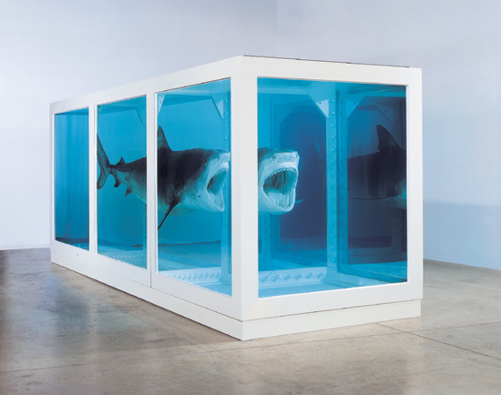

|
데미안 허스트 Damien Hirst |
|
| 본명 | 데미안 스티븐 허스트 (Damien Steven Hirst) |
|---|---|
| 출생 | 1965년 6월 7일, 영국 |
| 국적 | 영국 |
| 학력 | 골든스미스 대학 미술 전공 |
| 직업 | 현대미술가 |
| 수상 | 대표 : 1995년 터너상 |
| 링크 | 공식 사이트 |
|  | |
|
The Physical Impossibility of Death in the Mind of Someone Living 1991 |
|
| 1991년, 허스트는 죽은 상어(정확히는 죽은 뱀상어) 시체를 사다가 포름알데히드에 푹 재워서 넣은 다음 유리진열장에 넣고서 "살아있는 자의 마음속에 있는 죽음의 물리적 불가능성", "The Physical Impossibility of Death in the Mind of Someone Living" 이라는 제목을 달아 발표했다. 해당 작품은 엄청난 논란을 일으켰는데 신선한 새로운 시도라는 평가부터 사기꾼이라는 평가까지 다양한 평가가 나왔다. 거기다 무려 800만 달러가 넘는 금액에 팔려나갔을 정도로 엄청난 작품성과 화제성을 자랑했다. 허스트는 이 작품을 통해 사치 갤러리(Saatchi Gallery)를 소유한 찰스 사치의 후원을 받게 되었다. |

|
|
|
For the Love of God 2007 |
|
| 신의 사랑을 위하여'For the Love of God'라는 작품은 백금을 입힌 인간의 두개골의 표면에 8,601개의 다이아몬드를 촘촘히 박은 것인데, 이 작품은 후에 약 5,000만 파운드£에 거래되었다. 5,000만 파운드를 한화로 환산하면 약 900억 원에 달하는 액수다. |
|
Anatomy of an Angel 2008 |
|
| 허스트의 또다른 대표작인 천사의 해부학'Anatomy of an Angel'은 오른쪽 두개골과 근육, 유방과 내장 등을 세심하게 표현함으로써 생명과 사랑의 상징인 천사와 죽음을 연관시켰다. |

|
|
|
Hymn 1999 |
|
| 허스트의 작품은 죽음이라는 주제를 가지고서 상당히 파격적이고 충격적인 묘사로 유명하다. 앞서 본 바와 같이 죽은 동물의 시체나 인간의 해골, 심지어는 사람 장기모형 찬가'Hymn'나 파리 시체가 재료인 검은 태양'The Black Sun'과 같이 특이한 재료를 사용하여 작품을 만든다. 특히 위의 찬가'Hymn' 라는 장기모형 작품은 장기 모형을 그대로 사람보다 더 크게 만든 것뿐이라 제작사들이 고소미를 시전했을 정도로 논란이 많았다. |
| 데미안 허스트 관련 잡다한 기타 지식 | |
|
|